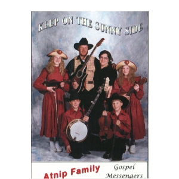

WELCOME!
Old-Fashioned Family Music
The Gospel Messengers are the Jim & Marilave Atnip family with their 10 children.
The goal of the Atnip Family as Gospel Messengers is to point their fellow men to salvation through the blood of a precious Savior, Jesus Christ, and to encourage one another during life's journey. They believe this should be their goal during the week, as they work in construction, other careers, and also run a home by playing bluegrass Gospel music by invitation in various public events.
They have been singing tours across the United States and in previous years have included Canada. In the recent 2 years these tours often center around prison services and prison crusades that the family can minister to. Found in the states of WY, MT, SC, MO, OK, and AL.